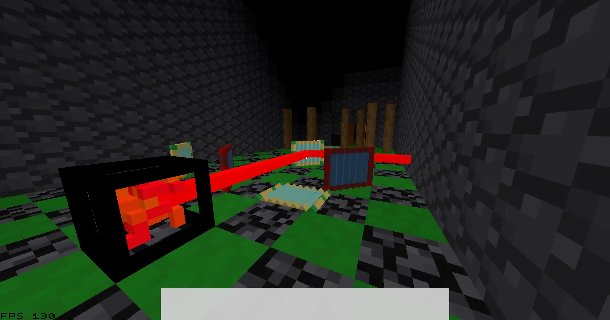
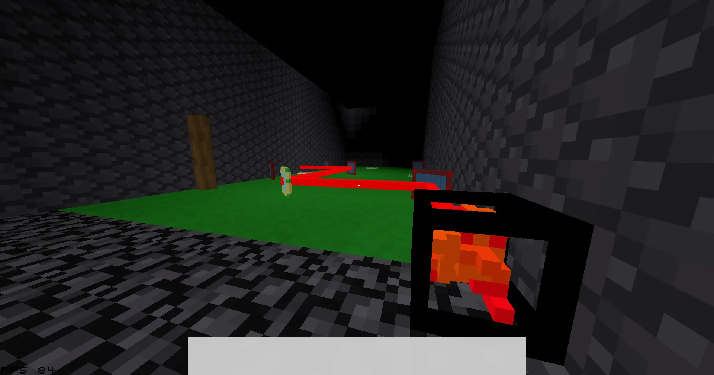
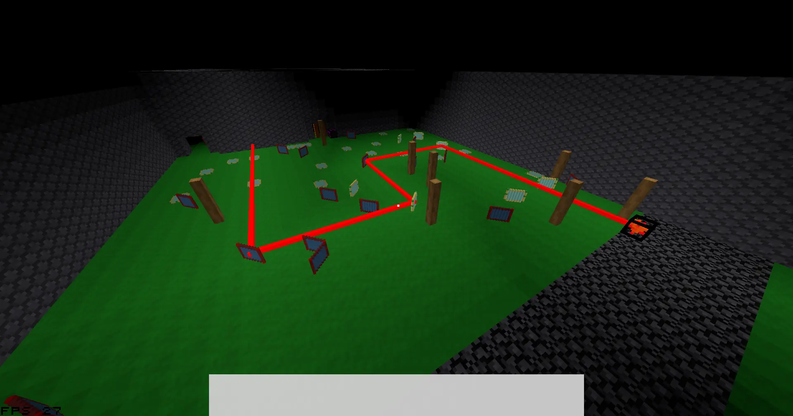

Page published & last updated
Play Voxel laser game

WHEW, managed to submit this one 5 minutes before the deadline... And then the jam organizers had a late-submission period (which they said they wouldn't have) for like an hour and a half... No, I'm not salty about that, not at all!
The game is playable, although scuffed. We almost ran out of time, after all!

Anyway, same story as with the dungeon game, got to improve the engine by making this jam game. The engine has been steadily improving anyway, but the burst of work and new ideas that a jam brings is nice sometimes.

This time, I didn't work alone! My friend suggested participating in this jam, came up with the idea for the game, helped out with the code and made the laser item model. It was their first time writing Rust, but they got the hang of it pretty quickly.
Also, they made the entire map and all of the puzzles! Totally didn't forget to mention that and come back here to edit that in... Whoops!
If you want to join me and see everything come together, check out my streams! I go live every Saturday at 6AM Helsinki time ^^